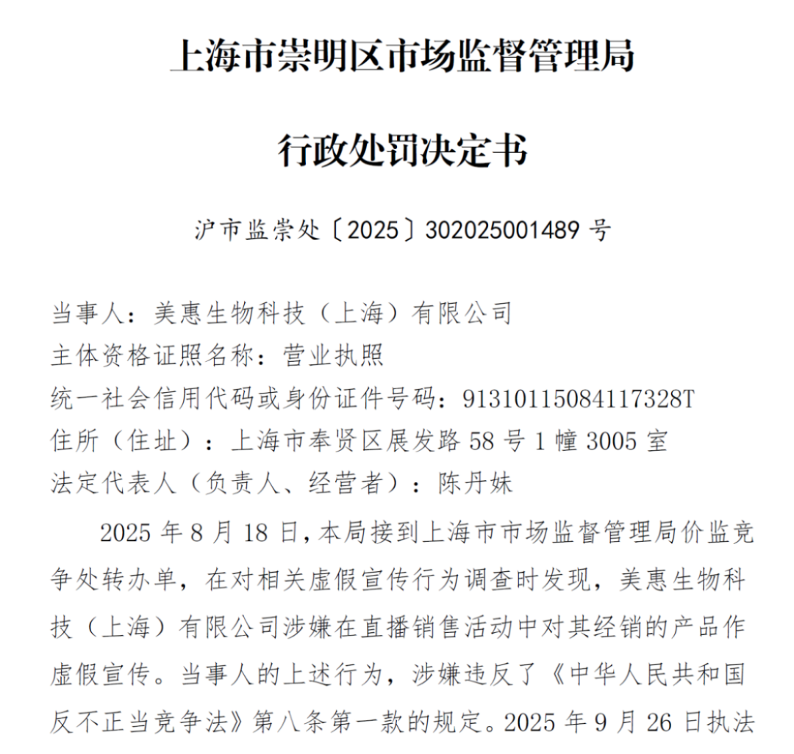
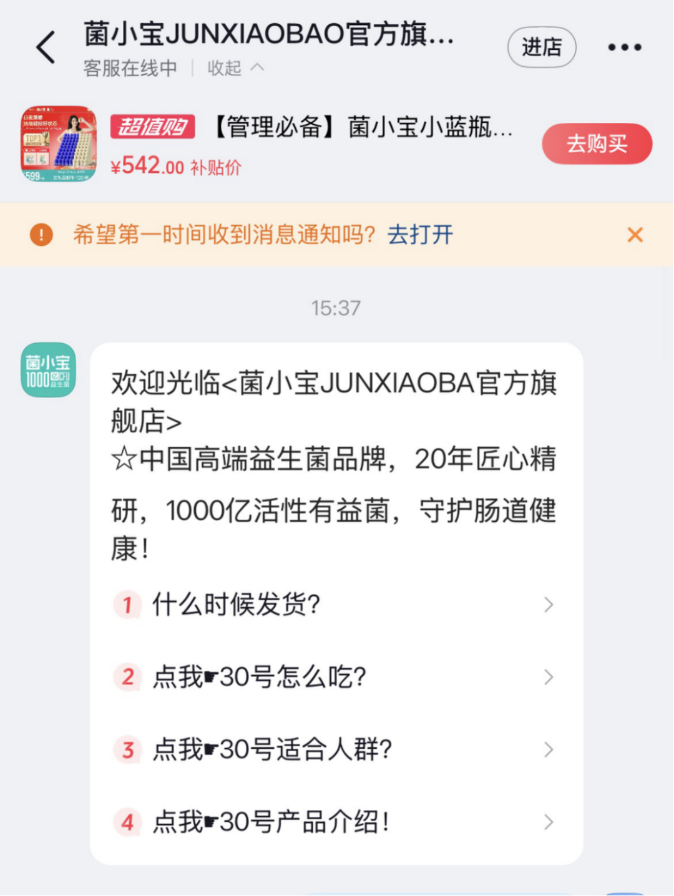
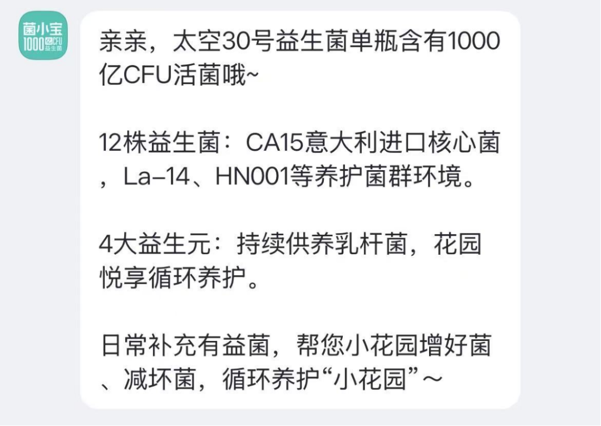
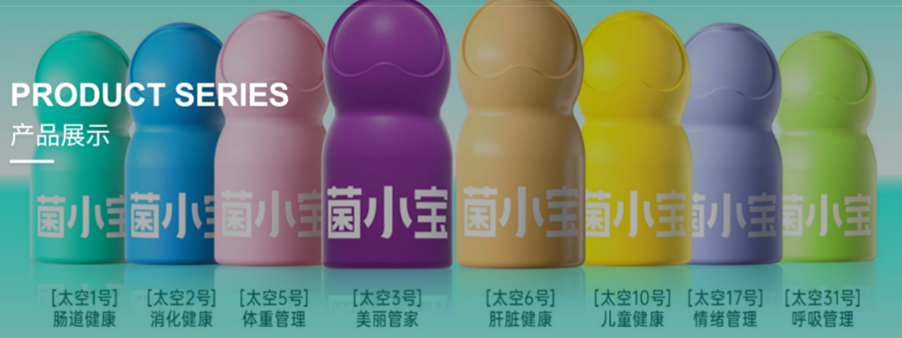
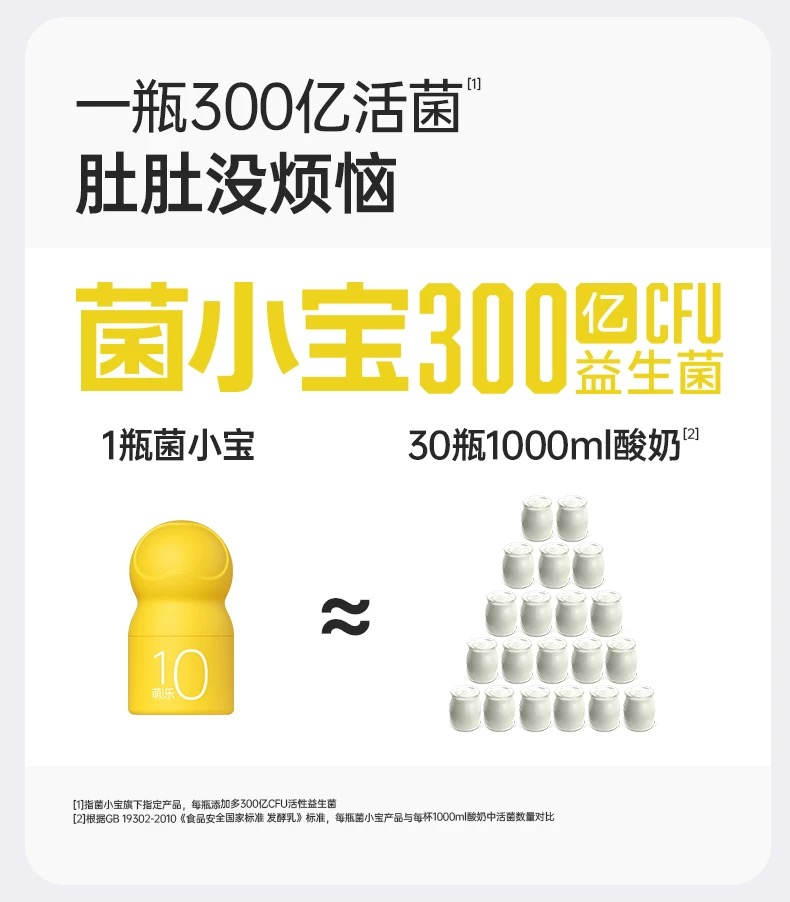
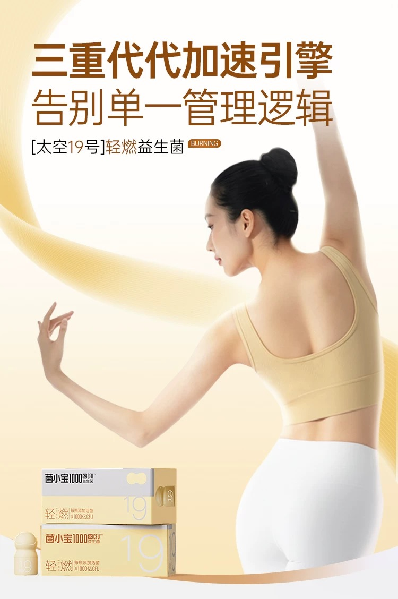

普通食品谎称能治病，又一网红品牌栽了
来源丨凤凰网《风暴眼》
作者丨李小白 王天昱
网红品牌虚假宣传再添一例。
凤凰网《风暴眼》获悉，日前，美惠生物科技（上海）有限公司（下称“美惠生物”），因在直播带货中对所经销的菌小宝“太空30号”产品进行虚假功效宣传，被上海市崇明区市场监督管理局立案调查，最终依法处以3万元罚款。

值得注意的是，根据媒体报道，这家被罚的公司，是上海菌小宝健康科技有限公司“菌小宝系列”产品的独家电商经销商。
01
官网店铺已无相关产品销售，客服称暂未接到补货通知
风波源于2025年的618大促。
为推广旗下“太空30号”产品，美惠生物在有赞平台的“菌小宝官方旗舰店”开启直播，宣传话术极具煽动性。
将产品标榜为“女性专属，守护女性私密花园的超强卫士”，承诺“10天就能明显改善私处环境，炎症、异味均可缓解”，甚至声称“对外阴白斑引发的瘙痒有效”“妇科炎症10天见效、30天巩固”。
2025年9月，崇明区市场监管局针对这一涉嫌虚假宣传行为正式立案。
调查结果一目了然。
这款被吹得神乎其神的“太空30号”，实则只是普通食品，不具备任何治疗功效，直播间的所有功效宣传，均为不实言论。
监管部门认定，美惠生物的行为违反了《中华人民共和国反不正当竞争法》第九条第一款，构成虚假且引人误解的商业宣传。
最终，除责令其立即停止违法宣传外，并处以3万元罚款。
凤凰网《风暴眼》发现，目前在多家电商平台的菌小宝官方店铺内，已无法搜索到“太空30号”这款产品。
但耐人寻味的是，在菌小宝抖音官方旗舰店的客服对话页，自动弹出的常见问题里，仍包含“30号怎么吃”“适合人群”“产品介绍”等相关条目。

点击产品介绍条目，其称太空30号益生菌单瓶含1000亿CFU活菌，搭配12株益生菌—— 其中有CA15意大利进口核心菌株，以及La-14、HN001等养护菌群的菌株，还添加4大益生元为乳杆菌持续供能，循环养护小花园。

凤凰网《风暴眼》以普通消费者身份咨询该产品是否在售时，客服先是回复“稍等，我给您发链接”，随后改口称要询问运营能否加库存，没多久又表示，此前的活动已结束，产品暂时无货。
当进一步追问上架时间，客服回应称暂未接到补货通知，建议后续持续关注店铺动态。
目前菌小宝官网界面已删除该产品，仅保留其他8款产品。

图源：菌小宝官网
02
跨界造网红，高端益生菌在直播间狂飙
公开资料显示，菌小宝是上海晨冠健康科技集团有限公司（下称晨冠集团）旗下，专注益生菌研发与销售的子品牌，归属上海菌小宝健康科技有限公司运营。
晨冠集团的创始人是涂醉桃。早在2002年，他就在上海创办了晨冠乳业，还推出了主打宝宝肠道健康的“聪尔壮”奶粉，此后在奶粉行业深耕多年。
晨冠集团创始人/董事长涂醉桃
到了2021年，晨冠集团正式官宣，切入益生菌这个新赛道，菌小宝应运而生。
凤凰网《风暴眼》发现，根据菌小宝的产品宣传，太空系列产品聚焦抗老、消化、肝脏、睡眠等多个健康领域。例如其宣称一瓶太空10号益生菌含有300亿活菌，可以帮助青少年调理肠胃；而其太空19号产品则宣称具有加速代谢的功效，帮助实现体重管理。


网红直播，可以说是菌小宝快速起量的核心推手。品牌搭建了一套“明星代言 + 头部主播矩阵”的立体传播打法。
2022年，菌小宝签下首位品牌代言人，先为直播带货攒下了基础流量。
直播合作上，品牌和国岳夫妇、涂磊、董先生等头部主播深度绑定，每场直播的GMV都很亮眼：和国岳夫妇合作的场次，GMV直接突破5060万元；和涂磊的合作场，达到3050万元；和董先生的每场合作，也都突破2500万元。
亮眼的战绩也体现在官方战报里。
2024年618大促，菌小宝线上全渠道销售额同比大涨406.51%，在保健滋补赛道排到第四。
而2024全年，各渠道都实现了明显增长。
其中，抖音达人带货销售额同比增长131%，抖音自营店增长86%，传统电商增长96%，私域渠道也增长了73%。
但此次“太空30号”被罚，也为菌小宝敲响警钟。
靠流量狂飙的网红品牌，若脱离产品本质、触碰合规红线，即便短期收获亮眼GMV，最终也难逃监管追责与市场淘汰，这也是此次虚假宣传案例留给行业的深刻启示。

你是不是也曾遭遇过各种投资理财、购买保险的陷阱，却投诉无门？或手握第一线的真实投资故事，却无人关注？扫码留言，让你的声音“被看见、被回应”！
👇【 热门视频推荐 】👇
点击在看 持续关注↓↓↓
本文由 ShawnCH（何智翔）轉發，透過微信聊天記錄自動提取並整理。 原文連結：https://mp.weixin.qq.com/s?__biz=MzU5ODU1Mjg5Nw==&mid=2247821897&idx=1&sn=f3ff02c33ff357cf6b1e5eadd1b8d038&chksm=fffd02d4c513a1aae57c2a998303c2c190df65bacb9b53684fc585d8c6c3f914b4331bd35c61&mpshare=1&scene=1&srcid=02041xaknSfQtzzBiwImPp1D&sharer_shareinfo=51ea35bbd87985b63cde867eef452814&sharer_shareinfo_first=51ea35bbd87985b63cde867eef452814#rd